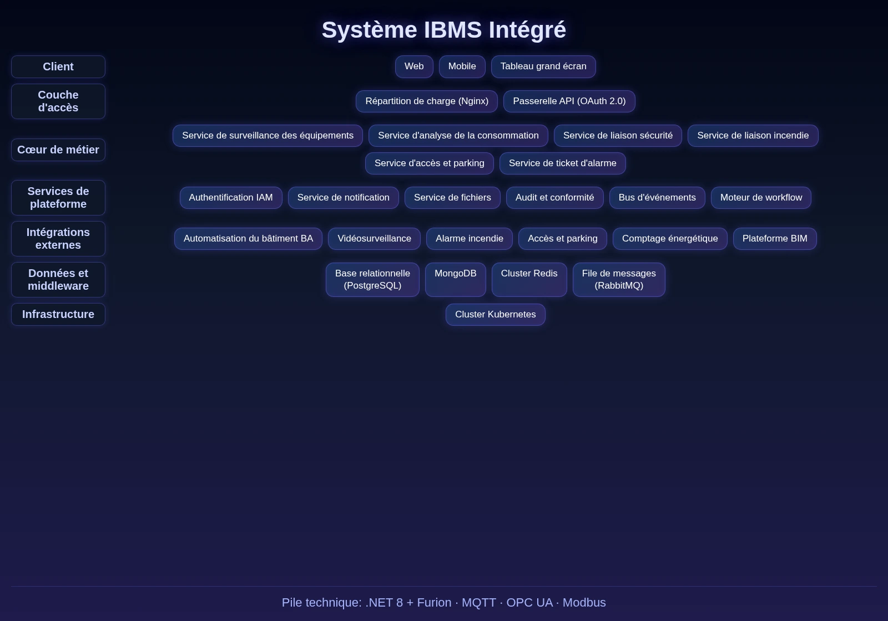

Le Système de Gestion Intelligente du Bâtiment (IBMS) intègre tous les sous-systèmes de bâtiment intelligent sur une plateforme unique. Face aux défis des bâtiments modernes avec de nombreux sous-systèmes indépendants entraînant une gestion fragmentée et des réponses tardives, le système offre l'intégration multi-sous-systèmes, la surveillance centralisée, le contrôle intelligent et l'optimisation énergétique, aidant à améliorer l'efficacité MCO, à réduire les coûts énergétiques et à garantir la sécurité.

Caractéristiques Clés
Le système couvre six modules : intégration, surveillance, contrôle lié, gestion énergie, MCO équipements et analyse de données.
Intégration Sous-Systèmes
Intègre plus de 20 sous-systèmes (BA, sécurité, incendie, accès, parking, énergie, etc.) via passerelles multi-protocoles BACnet, Modbus, OPC UA.
Surveillance Centralisée
Jumeau numérique fusionnant BIM et IoT, présentant l'état des équipements sur une vue panoramique unique.
Contrôle Lié
Moteur de transactions distribuées permettant des réponses automatiques inter-systèmes (alarme incendie → libération accès, commutation diffusion, rappel ascenseur, extraction).
Gestion Énergie
Base de données de séries temporelles surveillant l'eau/électricité en temps réel, avec algorithmes IA analysant les usages et générant des stratégies d'économie.
MCO Équipements
Inventaire complet et plan de maintenance, avec prédiction de panne et diagnostic intelligent basés sur les données d'exploitation.
Analyse de Données
Agrège efficacité, tendances énergétiques et taux de panne, générant automatiquement des rapports opérationnels.
Architecture du Système
Architecture du Système

Architecture adaptation multi-protocoles + jumeau numérique : cinq sous-systèmes (BA/FA/SA/CA/OA) intégrés via passerelles multi-protocoles ; le service de contrôle lié s'appuie sur DotNetCore.CAP pour les transactions distribuées ; le service jumeau numérique fusionne BIM et IoT avec visualisation 3D WebGL ; le service d'analyse énergétique utilise une base de séries temporelles pour la surveillance temps réel et l'économie d'énergie par IA.
Scénarios d'Application
Adapté à l'intégration multi-sous-systèmes, à la surveillance centralisée du bâtiment, au contrôle intelligent inter-systèmes et au suivi et optimisation énergétique.

Intégration Multi-Sous-Systèmes
Intègre plus de 20 sous-systèmes via passerelles multi-protocoles, supprimant les silos d'information.

Surveillance Centralisée
Jumeau numérique fusionnant BIM et IoT, présentant l'état des équipements sur une vue panoramique.

Contrôle Inter-Systèmes
Alarme incendie déclenchant automatiquement la libération d'accès, la commutation de diffusion, le rappel d'ascenseur et l'extraction, contrôle inter-systèmes intelligent.

Suivi & Optimisation Énergétique
Surveillance temps réel eau/électricité avec analyse IA et stratégies d'économie, réduisant les coûts.
Avantages et cas
Architecture ouverte multi-protocoles
Prend en charge plusieurs protocoles de communication tels que BACnet, Modbus, OPC UA, etc., compatible avec la grande majorité des marques d’équipements du marché, protégeant les investissements existants.
Visualisation de jumeau numérique
Fusionne les données BIM et IoT, permet une visualisation 3D via le moteur WebGL, pour une gestion de l’exploitation et de la maintenance intuitive et efficace.
Contrôle intelligent interconnecté
Réalise une interconnexion intelligente inter-systèmes basée sur un moteur de transactions distribuées, avec une réponse rapide et une interconnexion fiable, pour une boucle fermée complète alerte-traitement.
Optimisation énergétique par IA
Analyse les habitudes de consommation énergétique sur la base d’une base de données chronologiques et d’algorithmes d’IA, génère automatiquement des stratégies d’économie d’énergie, réduisant les coûts d’exploitation du bâtiment.
Portail unifié d’exploitation et de maintenance
Les cinq sous-systèmes BA/FA/SA/CA/OA sont connectés de manière unifiée via une passerelle multi-protocoles, permettant de contrôler l’ensemble du système depuis une seule plateforme.
Extensibilité élastique
L’architecture microservices prend en charge l’intégration à la demande de nouveaux sous-systèmes et de nouveaux types d’équipements, pour une extension fluide avec la taille du bâtiment.
Étude des besoins
Nous étudions en profondeur l’état actuel des systèmes intelligents du bâtiment et les besoins d’exploitation et de maintenance, et structurons la liste des sous-systèmes et les priorités d’intégration.
Déploiement du système
Prend en charge le déploiement local et le déploiement sur cloud, la passerelle multi-protocoles se connecte rapidement aux équipements existants, s’adaptant à des bâtiments de différentes tailles.
Formation et mise en ligne
Nous proposons une formation différenciée pour les administrateurs et le personnel d’exploitation et de maintenance, couvrant l’utilisation de la plateforme, le traitement des alertes, l’analyse de la consommation énergétique et l’utilisation des rapports.
Acceptation de mise en service
La réception se déroule en trois étapes : tests d’interconnexion, tests de charge de performance, scan de sécurité, pour garantir la stabilité et la fiabilité du système avant la livraison officielle.
Système de gestion intelligente d'un bâtiment administratif
Contexte : Un grand immeuble de bureaux gouvernemental, avec un grand nombre de sous-systèmes électromécaniques et de sécurité, ce qui rend la gestion de l’exploitation et de la maintenance quotidienne complexe.
Défis : Les sous-systèmes fonctionnaient indépendamment, la gestion était dispersée, il n’existait pas de vue unifiée de l’état de fonctionnement des équipements et de la consommation énergétique, et les réponses en matière d’exploitation et de maintenance étaient lentes.
Solution : Déploiement du système de gestion intégrée des bâtiments intelligents IBMS, qui connecte de manière unifiée les sous-systèmes de contrôle des bâtiments, de surveillance de sécurité, d’interconnexion anti-incendie, etc. à la plateforme, pour réaliser une surveillance centralisée et une interconnexion intelligente.
Résultats : Mise en place d’une gestion unifiée et d’un contrôle interconnecté des équipements du bâtiment, amélioration significative de l’efficacité de l’exploitation et de la maintenance, et réduction effective des coûts énergétiques.
Témoignage client : ——